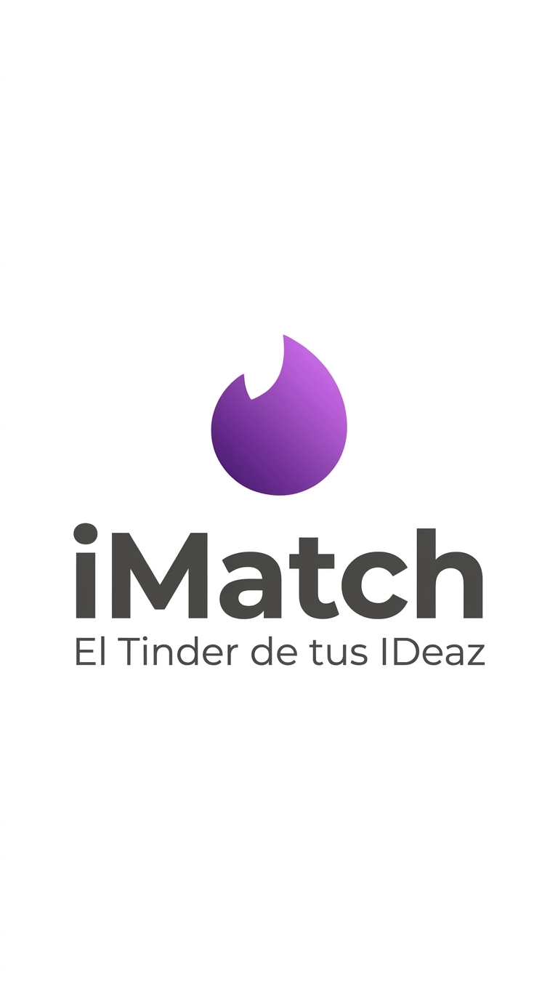

Cargando tu contenido…
Este link de revisión no existe o ya no está disponible.
Se guarda en este dispositivo — no te lo vamos a volver a preguntar.

Este comentario se envía directo al equipo, con la pieza adjunta.
Cada tarjeta es una pieza de contenido. Deslizá a la derecha si te gusta, a la izquierda si necesita cambios.
Estos botones hacen exactamente lo mismo que deslizar. Usá lo que te resulte más cómodo.
Te vamos a pedir un comentario y al menos una etiqueta, para que el equipo sepa exactamente qué corregir.
En los carruseles, tocá los costados de la imagen para ver las demás fotos — eso no cuenta como decisión.
Tenés piezas para revisar.